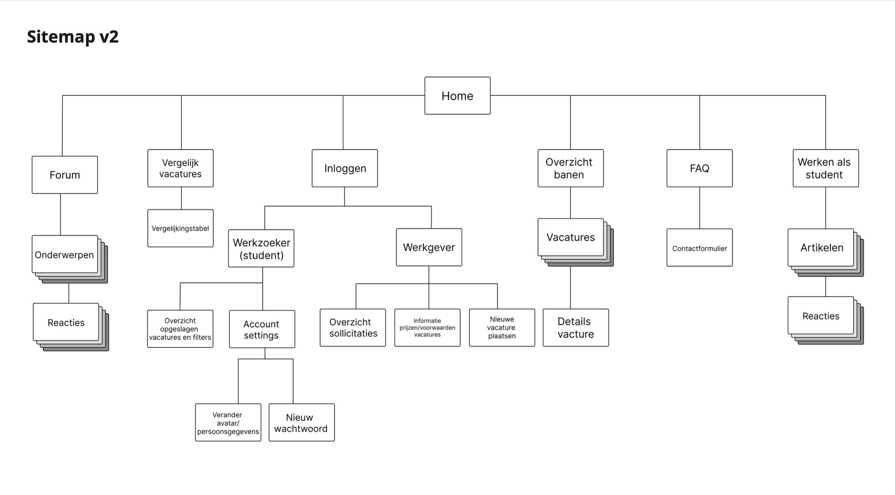

Alisha Soedamah
DesignerIt's currently · Monday
Poster Archive
(scroll to the right)


Projects
Selected works 2023 - 2025
Brief
For this project, I had the option to focus on either responsiveness or the surface plane while rebuilding a website. Regardless of my choice, the goal was to recreate an existing website and improve it. I chose responsiveness.
Link to the final site:
Final website
Breakdown of the mobile site (mobile)
Click to expand

Problems with the current site
Some parts of the website have wierd gaps between the heading and paragraph text:
I'm getting rid of the gaps for better readability
Web Content Accessibility Guidelines (WCAG):
- Make sure that button, a (links), and label (in forms) content is unique and descriptive ❌
- Make sure there is a visible focus style for interactive elements that are navigated (tab and shift + tab) to via keyboard input ❌
- Heading elements should be written in a logical sequence/don't skip heading levels ❌
- Check if dark and light mode are supported ❌
Improvements
Hyers site

My site
Web Content Accessibility Guidelines (WCAG):
- Make sure that button, a (links), and label (in forms) content is unique and descriptive ✅
- Make sure there is a visible focus style for interactive elements that are navigated (tab and shift + tab) to via keyboard input ✅
- Heading elements should be written in a logical sequence/don't skip heading levels ✅
- Check if dark and light mode are supported ✅
More documentation for this project can be found on my Github page:
Github repoBrief
Design a job website for students wanting to work next to their studies. For this project we had to think about a seprate login page for students seeking a job and the employer. For this project I had to create a flowchart, a home page, an overview page, a detail page and we had to create a whole new feature for the website. The final grade I recieved for this assignment was a 9.
Sitemap
Click to expand
Flow

Click to expand
User journey map
Click to expand
Wireframes I created
Home page

Overview page
Detail page
New feature page a

New feature page b
Annotated wireframes
DownloadBrief
Design a bookfinder app in the house style of Gemeente Amsterdam for children ages 12-16. The illustrations in the final design imitate the lineless house style of Gemeente Amsterdam. I chose the theme style "space" because it connects to the curiosity of the target group. “The journey to knowledge”. Aliens connect to the imaginative world of this target group.
Demo
Previous versions + notes
DownloadBrief
The Unplugged meeting is a monthly gathering at the end of each month at my former internship. Created as a moment to disconnect, unplug, and pause to reflect on the projects of that month. During these monthly gatherings, the creative members of the team take the initiative to create cover art and present their creations during the meeting. Since it was my last month at Rōnin, I wanted to create my own cover art and present it. After discussing the idea with my internship supervisor, she liked the idea and I got straight to work.
Progress
Initially the idea came to me pretty fast, I was going to create a cover art with ascii art and P5.js. Generative computer art always amazed me and I wanted to do something with it for a long time but never had a reason to use it until now. Although I did not have a lot of knowelge on the subject I had a whole month to figure it out. In the end I got a lot of inspiration from:
Open Processing
Finished product


Closing words
I am grateful to have had the privilege of learning something new whilist actively working on my presentation skills.
Brief
Beyond the screen is a collaborative project where we developed a physical solution to a real-world problem. The focus of this project was to design in the real-world without the use of screens. For this project, we created a solution to reduce screen time before sleep with our product: "De slaaplekker wekker".
Design challenge
Our project focuses on sleep, addressing a common challenge we observe among our peers. This led us to define our design challenge:
What effective alternatives to evening screentime use can help students aged 18 to 23 fall asleep?
Context
- Phone use reduces sleep in students
- Short form content/socialmedia is usally the cause
- Because of this students are falling asleep later, not being rested enough the next day
- Blue light = less melatonin production
Stakeholders
The stakeholders we chose are students between the ages of 18 and 23. During the interviews we conducted, it was indicated that they do not get the average recommended sleep time (7-9 hours per night) at their age. They also indicated that they used screens before sleeping. This results in staying awake at night until they are exhausted, waking up during the night and not getting into deep sleep.
Key findings interviews
- On average, our interviewees sleep 6.3 hours per day
- Some of the interviewees do not experience deep sleep
- Everyone uses aids to fall asleep
- The interviewees fall asleep until tired
- It takes ≥ 20 minutes to fall asleep
- The majority fall asleep while using screens
- Mood varies per person
Persona based on interviews
By creating a persona, we identified the most common sleep-related challenges students face. Our final persona struggles to fall asleep due to phone use and relies on sleeping pills for better rest. Our solution aims to encourage students to disconnect from their phones before bed, ultimately improving sleep quality and addressing our persona’s challenges.
Click to expand
Context Map

- Using screens before bed leads to sleeplessness
- Phone is distracting in the room
- User keeps getting new messages, tendency to pick it up
User Journey

Click to expand
Ideation
Morphological map

Click to expand
The morphological map allowed us to make visual and practical choices to arrive at a concept for our final product.
Lotus diagram
Click to expand
Thanks to this visual aid we have a better understanding of how these themes relate to each other and which theme we can best apply in our concept by looking at the core.
Concept Product
Click to expand
Our concept consists of two parts: an alarm clock and a box to put your phone in. On the front of this box is a flap that opens automatically when the user holds his hand or phone in front of it. When the phone is in the box, the flap closes and the light above the alarm clock changes to green, indicating that the phone is in the box. After this, the box is locked and the user can no longer reach your phone until the alarm goes off in the morning.
Customer journey
Click to expand
Iteration 1 (Lo-fi)
Click to expand
Iteration 2 (Med-fi)
Click to expand

Click to expand
Click to expand
Iteration 3 (Hi-fi)

Click to expand
Design Rationale
More about me
Hi I am Alisha üëã, a designer based in the Netherlands. Here you will find my creative works such as: posters, school stuff, websites and other (personal) projects I have worked on during the past years. My interest in design was sparked during my final internship for my studies. Throughout this Internship I got to design a lot of things with my team and ended up really enjoying finding creative solutions from a visual standpoint. This lead me to persue the bachelors programme:
Communication Multimedia Design (CMD)